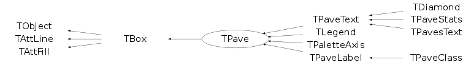

Function Members (Methods)
public:
| TPave() | |
| TPave(const TPave& pave) | |
| TPave(Double_t x1, Double_t y1, Double_t x2, Double_t y2, Int_t bordersize = 4, Option_t* option = "br") | |
| virtual | ~TPave() |
| void | TObject::AbstractMethod(const char* method) const |
| virtual void | TObject::AppendPad(Option_t* option = "") |
| virtual void | TObject::Browse(TBrowser* b) |
| static TClass* | Class() |
| virtual const char* | TObject::ClassName() const |
| virtual void | TObject::Clear(Option_t* = "") |
| virtual TObject* | TObject::Clone(const char* newname = "") const |
| virtual Int_t | TObject::Compare(const TObject* obj) const |
| virtual void | ConvertNDCtoPad() |
| virtual void | Copy(TObject& pave) const |
| virtual void | TObject::Delete(Option_t* option = "")MENU |
| Int_t | TAttLine::DistancetoLine(Int_t px, Int_t py, Double_t xp1, Double_t yp1, Double_t xp2, Double_t yp2) |
| virtual Int_t | DistancetoPrimitive(Int_t px, Int_t py) |
| virtual void | Draw(Option_t* option = "") |
| virtual TBox* | TBox::DrawBox(Double_t x1, Double_t y1, Double_t x2, Double_t y2) |
| virtual void | TObject::DrawClass() constMENU |
| virtual TObject* | TObject::DrawClone(Option_t* option = "") constMENU |
| virtual void | DrawPave(Double_t x1, Double_t y1, Double_t x2, Double_t y2, Int_t bordersize = 4, Option_t* option = "br") |
| virtual void | TObject::Dump() constMENU |
| virtual void | TObject::Error(const char* method, const char* msgfmt) const |
| virtual void | TObject::Execute(const char* method, const char* params, Int_t* error = 0) |
| virtual void | TObject::Execute(TMethod* method, TObjArray* params, Int_t* error = 0) |
| virtual void | ExecuteEvent(Int_t event, Int_t px, Int_t py) |
| virtual void | TObject::Fatal(const char* method, const char* msgfmt) const |
| virtual TObject* | TObject::FindObject(const char* name) const |
| virtual TObject* | TObject::FindObject(const TObject* obj) const |
| Int_t | GetBorderSize() const |
| Double_t | GetCornerRadius() const |
| virtual Option_t* | TObject::GetDrawOption() const |
| static Long_t | TObject::GetDtorOnly() |
| virtual Color_t | TAttFill::GetFillColor() const |
| virtual Style_t | TAttFill::GetFillStyle() const |
| virtual const char* | TObject::GetIconName() const |
| virtual Color_t | TAttLine::GetLineColor() const |
| virtual Style_t | TAttLine::GetLineStyle() const |
| virtual Width_t | TAttLine::GetLineWidth() const |
| virtual Option_t* | GetName() const |
| virtual char* | TObject::GetObjectInfo(Int_t px, Int_t py) const |
| static Bool_t | TObject::GetObjectStat() |
| virtual Option_t* | GetOption() const |
| Int_t | GetShadowColor() const |
| virtual const char* | TObject::GetTitle() const |
| virtual UInt_t | TObject::GetUniqueID() const |
| Double_t | TBox::GetX1() const |
| Double_t | GetX1NDC() const |
| Double_t | TBox::GetX2() const |
| Double_t | GetX2NDC() const |
| Double_t | TBox::GetY1() const |
| Double_t | GetY1NDC() const |
| Double_t | TBox::GetY2() const |
| Double_t | GetY2NDC() const |
| virtual Bool_t | TObject::HandleTimer(TTimer* timer) |
| virtual ULong_t | Hash() const |
| virtual void | TBox::HideToolTip(Int_t event) |
| virtual void | TObject::Info(const char* method, const char* msgfmt) const |
| virtual Bool_t | TObject::InheritsFrom(const char* classname) const |
| virtual Bool_t | TObject::InheritsFrom(const TClass* cl) const |
| virtual void | TObject::Inspect() constMENU |
| void | TObject::InvertBit(UInt_t f) |
| virtual TClass* | IsA() const |
| Bool_t | TBox::IsBeingResized() const |
| virtual Bool_t | TObject::IsEqual(const TObject* obj) const |
| virtual Bool_t | TObject::IsFolder() const |
| virtual Int_t | TBox::IsInside(Double_t x, Double_t y) const |
| Bool_t | TObject::IsOnHeap() const |
| virtual Bool_t | IsSortable() const |
| virtual Bool_t | TAttFill::IsTransparent() const |
| Bool_t | TObject::IsZombie() const |
| virtual void | ls(Option_t* option = "") const |
| void | TObject::MayNotUse(const char* method) const |
| virtual void | TAttLine::Modify() |
| virtual Bool_t | TObject::Notify() |
| void | TObject::Obsolete(const char* method, const char* asOfVers, const char* removedFromVers) const |
| static void | TObject::operator delete(void* ptr) |
| static void | TObject::operator delete(void* ptr, void* vp) |
| static void | TObject::operator delete[](void* ptr) |
| static void | TObject::operator delete[](void* ptr, void* vp) |
| void* | TObject::operator new(size_t sz) |
| void* | TObject::operator new(size_t sz, void* vp) |
| void* | TObject::operator new[](size_t sz) |
| void* | TObject::operator new[](size_t sz, void* vp) |
| TPave& | operator=(const TPave&) |
| virtual void | Paint(Option_t* option = "") |
| virtual void | TBox::PaintBox(Double_t x1, Double_t y1, Double_t x2, Double_t y2, Option_t* option = "") |
| virtual void | PaintPave(Double_t x1, Double_t y1, Double_t x2, Double_t y2, Int_t bordersize = 4, Option_t* option = "br") |
| virtual void | PaintPaveArc(Double_t x1, Double_t y1, Double_t x2, Double_t y2, Int_t bordersize = 4, Option_t* option = "br") |
| virtual void | TObject::Pop() |
| virtual void | Print(Option_t* option = "") const |
| virtual Int_t | TObject::Read(const char* name) |
| virtual void | TObject::RecursiveRemove(TObject* obj) |
| virtual void | TAttFill::ResetAttFill(Option_t* option = "") |
| virtual void | TAttLine::ResetAttLine(Option_t* option = "") |
| void | TObject::ResetBit(UInt_t f) |
| virtual void | TObject::SaveAs(const char* filename = "", Option_t* option = "") constMENU |
| virtual void | TAttFill::SaveFillAttributes(ostream& out, const char* name, Int_t coldef = 1, Int_t stydef = 1001) |
| virtual void | TAttLine::SaveLineAttributes(ostream& out, const char* name, Int_t coldef = 1, Int_t stydef = 1, Int_t widdef = 1) |
| virtual void | SavePrimitive(ostream& out, Option_t* option = "") |
| void | TObject::SetBit(UInt_t f) |
| void | TObject::SetBit(UInt_t f, Bool_t set) |
| virtual void | SetBorderSize(Int_t bordersize = 4)MENU |
| virtual void | SetCornerRadius(Double_t rad = 0.2)MENU |
| virtual void | TObject::SetDrawOption(Option_t* option = "")MENU |
| static void | TObject::SetDtorOnly(void* obj) |
| virtual void | TAttFill::SetFillAttributes()MENU |
| virtual void | TAttFill::SetFillColor(Color_t fcolor) |
| virtual void | TAttFill::SetFillStyle(Style_t fstyle) |
| virtual void | TAttLine::SetLineAttributes()MENU |
| virtual void | TAttLine::SetLineColor(Color_t lcolor) |
| virtual void | TAttLine::SetLineStyle(Style_t lstyle) |
| virtual void | TAttLine::SetLineWidth(Width_t lwidth) |
| virtual void | SetName(const char* name = "")MENU |
| static void | TObject::SetObjectStat(Bool_t stat) |
| virtual void | SetOption(Option_t* option = "br") |
| virtual void | SetShadowColor(Int_t color)MENU |
| virtual void | TBox::SetToolTipText(const char* text, Long_t delayms = 1000) |
| virtual void | TObject::SetUniqueID(UInt_t uid) |
| virtual void | TBox::SetX1(Double_t x1) |
| virtual void | SetX1NDC(Double_t x1) |
| virtual void | TBox::SetX2(Double_t x2) |
| virtual void | SetX2NDC(Double_t x2) |
| virtual void | TBox::SetY1(Double_t y1) |
| virtual void | SetY1NDC(Double_t y1) |
| virtual void | TBox::SetY2(Double_t y2) |
| virtual void | SetY2NDC(Double_t y2) |
| virtual void | ShowMembers(TMemberInspector& insp) |
| virtual void | Streamer(TBuffer& b) |
| void | StreamerNVirtual(TBuffer& b) |
| virtual void | TObject::SysError(const char* method, const char* msgfmt) const |
| Bool_t | TObject::TestBit(UInt_t f) const |
| Int_t | TObject::TestBits(UInt_t f) const |
| virtual void | TObject::UseCurrentStyle() |
| virtual void | TObject::Warning(const char* method, const char* msgfmt) const |
| virtual Int_t | TObject::Write(const char* name = 0, Int_t option = 0, Int_t bufsize = 0) |
| virtual Int_t | TObject::Write(const char* name = 0, Int_t option = 0, Int_t bufsize = 0) const |
protected:
| virtual void | TObject::DoError(int level, const char* location, const char* fmt, va_list va) const |
| void | TObject::MakeZombie() |
Data Members
public:
| enum { | kNameIsAction | |
| }; | ||
| enum TBox::[unnamed] { | kCannotMove | |
| }; | ||
| enum TObject::EStatusBits { | kCanDelete | |
| kMustCleanup | ||
| kObjInCanvas | ||
| kIsReferenced | ||
| kHasUUID | ||
| kCannotPick | ||
| kNoContextMenu | ||
| kInvalidObject | ||
| }; | ||
| enum TObject::[unnamed] { | kIsOnHeap | |
| kNotDeleted | ||
| kZombie | ||
| kBitMask | ||
| kSingleKey | ||
| kOverwrite | ||
| kWriteDelete | ||
| }; |
protected:
| Int_t | fBorderSize | window box bordersize in pixels |
| Double_t | fCornerRadius | Corner radius in case of option arc |
| Color_t | TAttFill::fFillColor | fill area color |
| Style_t | TAttFill::fFillStyle | fill area style |
| Int_t | fInit | (=0 if transformation to NDC not yet done) |
| Color_t | TAttLine::fLineColor | line color |
| Style_t | TAttLine::fLineStyle | line style |
| Width_t | TAttLine::fLineWidth | line width |
| TString | fName | Pave name |
| TString | fOption | Pave style |
| Bool_t | TBox::fResizing | !True if box is being resized |
| Int_t | fShadowColor | Color of the pave's shadow |
| Double_t | TBox::fX1 | X of 1st point |
| Double_t | fX1NDC | X1 point in NDC coordinates |
| Double_t | TBox::fX2 | X of 2nd point |
| Double_t | fX2NDC | X2 point in NDC coordinates |
| Double_t | TBox::fY1 | Y of 1st point |
| Double_t | fY1NDC | Y1 point in NDC coordinates |
| Double_t | TBox::fY2 | Y of 2nd point |
| Double_t | fY2NDC | Y2 point in NDC coordinates |
Class Charts
{kind=link}
{kind=link}
{kind=link}
{kind=link}

Function documentation
TPave(Double_t x1, Double_t y1, Double_t x2, Double_t y2, Int_t bordersize = 4, Option_t* option = "br")
Pave normal constructor. a PAVE is a box with a bordersize and a shadow option the bordersize is in pixels option = "T" Top frame option = "B" Bottom frame option = "R" Right frame option = "L" Left frame option = "NDC" x1,y1,x2,y2 are given in NDC option = "ARC" corners are rounded IMPORTANT NOTE: Because TPave objects (and objects deriving from TPave) have their master coordinate system in NDC, one cannot use the TBox functions SetX1,SetY1,SetX2,SetY2 to change the corner coordinates. One should use instead SetX1NDC, SetY1NDC, SetX2NDC, SetY2NDC.
Int_t DistancetoPrimitive(Int_t px, Int_t py)
Compute distance from point px,py to a pave. Compute the closest distance of approach from point px,py to the edges of this pave. The distance is computed in pixels units.
void DrawPave(Double_t x1, Double_t y1, Double_t x2, Double_t y2, Int_t bordersize = 4, Option_t* option = "br")
Draw this pave with new coordinates.
void ExecuteEvent(Int_t event, Int_t px, Int_t py)
Execute action corresponding to one event. This member function is called when a PAVE object is clicked.
void Paint(Option_t* option = "")
Paint this pave with its current attributes. option = "T" Top frame option = "B" Bottom frame option = "R" Right frame option = "L" Left frame option = "NDC" x1,y1,x2,y2 are given in NDC option = "ARC" corners are rounded In case of option "ARC", the corner radius is specified via TPave::SetCornerRadius(rad) where rad is given in percent of the pave height (default value is 0.2).
void PaintPave(Double_t x1, Double_t y1, Double_t x2, Double_t y2, Int_t bordersize = 4, Option_t* option = "br")
Draw this pave with new coordinates.
void PaintPaveArc(Double_t x1, Double_t y1, Double_t x2, Double_t y2, Int_t bordersize = 4, Option_t* option = "br")
Draw this pave with rounded corners.
void SavePrimitive(ostream& out, Option_t* option = "")
Save primitive as a C++ statement(s) on output stream out